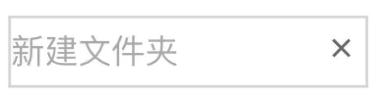
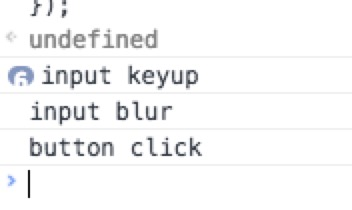
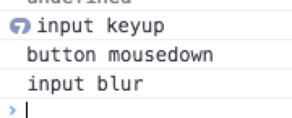
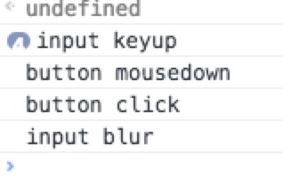

click和blur事件顺序探秘
1、现象
最近在开发中碰到了一个需求，具体需求如下图。

这是一个很常见的需求，input框负责在点击回车和失焦的时候确认输入。button负责清除输入，input绑定代码为：
input.addEventListener('blur',function(){
console.log('input blur');
});
input.addEventListener('keyup',function(){
console.log('input keyup');
});
"X"绑定的代码为：
button.addEventListener('click', function(e){
console.log('button click');
});
尝试着执行代码，并按照先输入再点击按钮取消的操作，结果如下：

可以看到，input blur在button的click之前触发了，这就导致取消操作其实并没有起到作用。
同时，也能发现事件的执行顺序为(input-blur) -> (button-click);
2、解决方案1
最简单的解决方案为：将button的时间换成onmousedown事件，可以得到如下结果：

事件顺序正确了，但是这种解决方式有两个问题：
a）无法在按下按钮后取消点击
b）控制blur是否执行，需要额外的代码
那么有木有进一步解决方案呢？
3、解决方案2
对button同时绑定mousedown和blur事件即可，具体代码和执行结果如下：
button.addEventListener('mousedown', function(e){
console.log('button mousedown');
e.preventDefault();
});
button.addEventListener('click', function(e){
console.log('button click');
input.blur();
});

这样的方式，就克服了第一种方案的两个弊端，也完美的解决了需求。
4、执行顺序探秘
查询w3c标准后，没有发现关于blur和mousedown，click的顺序说明。根据猜测，blur需要mousedown执行默认事件来触发。所以总结事件顺序应为：mousedown->（other）blur->mouseup->click